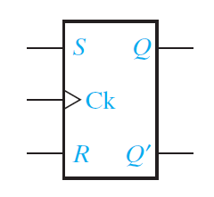
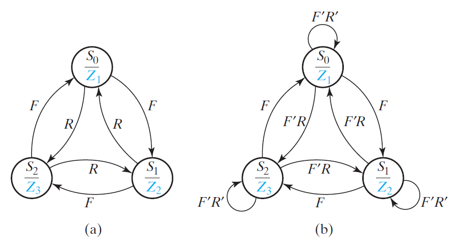

Logic Design¶
see https://dlcc.notion.site/fd1e2a787b11464896f55d9684337246
Ch11 Latches and Flip-flops¶
flip-flop: only response to a ==clock input== (but not a data input)
bc propagation odd number of inverters oscillate
11.2 S-R Latch¶
original NOR S-R Latch¶
switch S switch S switch R
if !(S=R=1) then P == Q'
if S=R=1
when S,R=10
P,Q oscillate 0101....
time diagram¶
if S's or R's duration of S <
then Q won't change
Q+ = ((Q+S)'+R)' = (Q+S)R' = R'S + R'Q P = (S+Q)' = S'Q' bc S=R=1 is disallowed (i.e. SR=0) so
==Q+= S + R'Q==¶
(Q+=R'S + R'Q + RS)
Q+=1 when
debounce switch¶
S bounces when switch to b
R bounces when switch to a
Q+=S+R'Q
Bounce at a: S=Q=0 so always 0
Bounce at b: S duration > let Q1, then stays at 1 bc R=0
NAND S-R Latch¶
Q+ = ((QR)'S)' = QR + S'
= NOR S'-R' Latch
note that ==S, R switch place==
11.3 Gated Latches¶
NAND-gate gated S-R Latch¶
Q+ = A' + BQ = SG + (RG)'Q = SG + Q(R' + G')
P = (BQ)' = Q' + RG
when G=0, Q+=Q, P=Q' stable
when G=1, Q+=S+QR', P=RG original NOR S-R Latch
when S=R=1 and G=10
propogation time race
Q+=SG+Q(R'+G'):
static-1 hazard between G=0,1
1's, 0's catching problem¶
S=R=0, G=1, Q=0
S has a 1 glitch Q=01
1's catching problem
NOR S-R Latch has a 0's catching problem
so S, R inputs must not have glitch
Gated D Latch¶
S = D, R = D'
(L NOR S-R latch)

when G=0, Q+ = Q
when G=1, Q+ = S+QR = D
transparent latch
Q+ = G'Q + GD
when Clk=1 and x=1, D oscillates
opening a clock for only a little time (let D pass to Q but not QQ' pass to D) will solve the problem
so we restrict the flip-flop to only change on the edge of the clock (input change no effect)
edge-triggered flip-flop
11.4 Edge-Triggered D Flip-Flop¶
rising-edge trigger(left): output change when Clk=01
falling-edge trigger(right, has bubble): output change when Clk=10
falling-edge triggered D flip-flop time diagram
when Clk=10, Q = D the moment Clk change
rising edge triggered D flip-flop¶
when Clk=0, D pass to P, Q+=Q
when Clk=01, D pass to P pass to Q
when Clk=1, Q hold the D when Clk 01, D now doesn't affect anything
when Clk=01, nothing happens
tsu (setup time) = D's must-stable time before Clk 01
th (hold time) = D's must=stable time after Clk 01
tp = clock's propagational delay
an example of minumum clock period
11.5 S-R Flip-Flop¶

(rising-edge)
NOR-gate S-R latch: Q+=S+R'Q
when Clk=0, S1=S, R1=R (Master)
when Clk=1, Q=P
Q change when Clk=01
at t4, Clk=10, so P=S+R'Q=1
at t4, Clk=01, so P=1 pass to Q
but S=R=0 then, Q shoudln't change
so we ==only allow inputs change when clock is high==
11.6 J-K Flip-Flop¶
(rising-edge)
when Clk=1, ==P=JQ'+K'Q==
when J=K=1 and Clk=01, Q+=Q'
so ==J=K=1 is illegal==
11.7 T Flip-Flop¶
J-K flip-flop: Q+=JQ'+K'Q D flip-flop: Q+=D when Clk=1
==Q+ = TQ' + T'Q = T Q==
11.8 Flip-Flops with Additional Inputs¶
D flip-flop with clear and reset¶
if ClrN=0 then Q0
if PreN=0 then Q1
D flip-flop with clock enable¶
Q+ = QCE' + DCE (when Ck=1)
implementation
Q+ = QCE' + DinCE
skip 11.9 =))¶
Ch14 Derivation of State Graphs and Tables¶
example: design the circuit so that any input sequence ending in 101 will produce an output Z = 1 coincident with the last 1 the symbol before the slash is the input and the symbol after the slash is the corresponding output
Mealy machine¶
target: \(S_0S_1S_2\) = 101 \(S_0\): get 1 store it ; get 0 again
\(S_0S_1S_2\)
(i.e. \(S_0\) 00 or 01 or whatever )
SOP
Moore machine¶
initial state = 1
++01++000 underline part Z=1
14.2 More Complex Design Problems¶
a Mealy example¶
The output Z should be 1 if the input sequence ends in either 010 or 1001, and Z should be 0 otherwise.
010| _10|01
1001| __ 01|0
"|":

a Moore example¶
The output Z is to be 1 if the total number of 1s received is ++odd++ and at least ++two consecutive 0s++ have been received.
14.3 Guidelines for Construction of State Graphs¶
The circuit examines groups of four consecutive inputs and produces an output Z = 1 if the input sequence 0101 or 1001 occurs. The circuit resets after every four inputs.
Mealy
0101 & 1001
output 0
a group of 5
== example 2, 3==
14.4 Serial Data Code Conversion¶
NRZnon return to zero,
RZreturn to 0, 1 , 0
NRZIinverted, 1 (i.e. 0 \(Q^+=Q\) ; 1 \(Q^+=Q'\))
Manchester0 1 ; 1 0
Mealy ver.¶
NRZ {|convert} Manchester
ideal
actual false output
clock2 2 output changes edge
NRZ stable for 2 clock2 period
clock change but input hasn't glitch
\(S_1\) 1 so
Moore ver.¶
NRZ {|convert} Manchester
14.5 Alphanumeric State Graph Notation¶
(a) F forward ; R reverse
(b) FR=11,00

\(S_0\)
3 or 1 1
F + FR + FR = F + F = 1
3 and 0 2 1
FFR = 0, FFR = 0, FRFR = 0
1 1
for Mealy
\(X_iX_j/Z_pZ_q\) means if \(X_iX_j\) = 11 (other Xs don't care), \(Z_pZ_q = 11\) (others Zs = 0)
e.g. \(X_1X_4'/Z_2Z_3\) means 1--0/0110
14.6 Incompletely Specified State Tables¶
BCD (0~9 in binary i.e. 0000-1001)¶
while in last bit:
if 1s = even 1
else 0

101 disjoint, output only used in the end¶
Problems¶
14.16¶
ans
14.31¶
ans
14.33¶
ans
14.38¶
ans
14.43¶
ans
14.45¶
ans